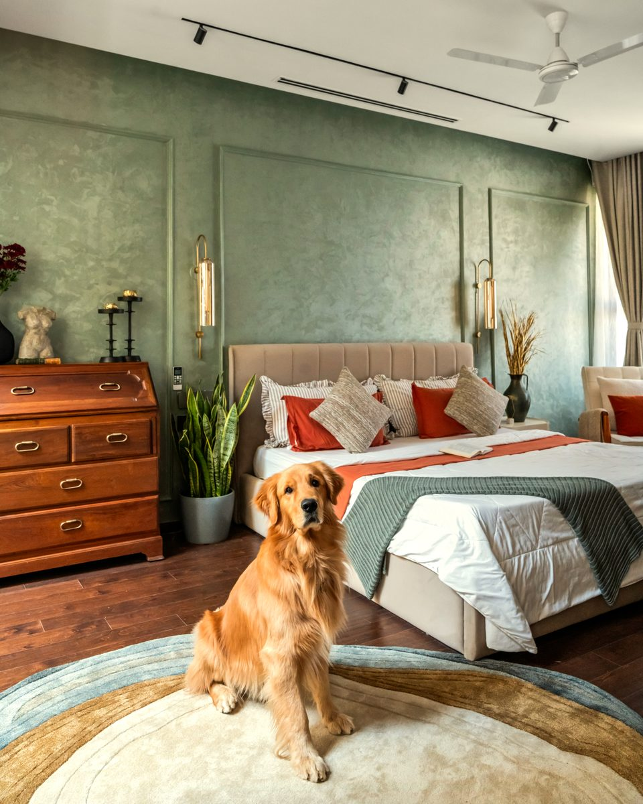
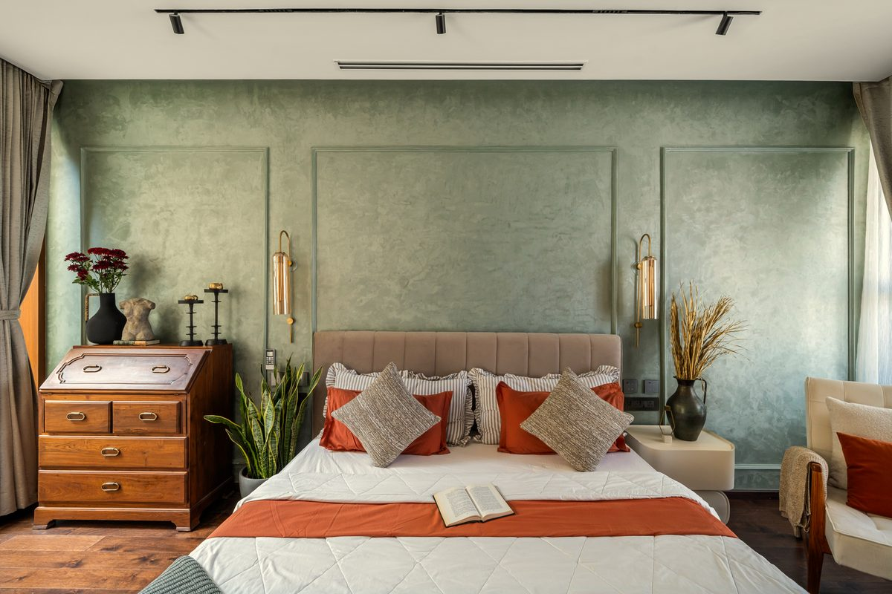
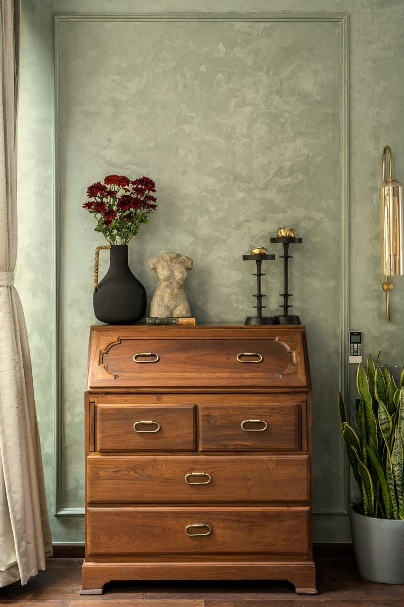
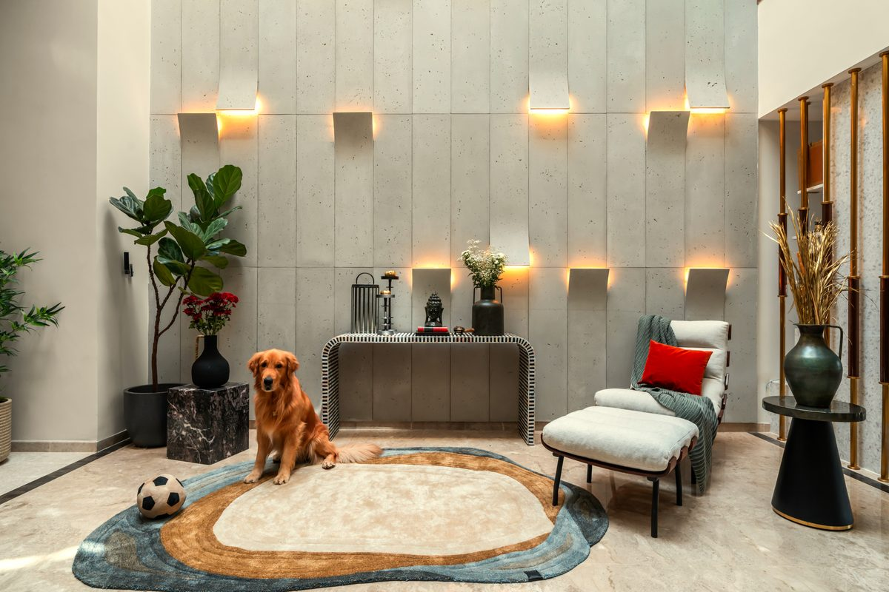
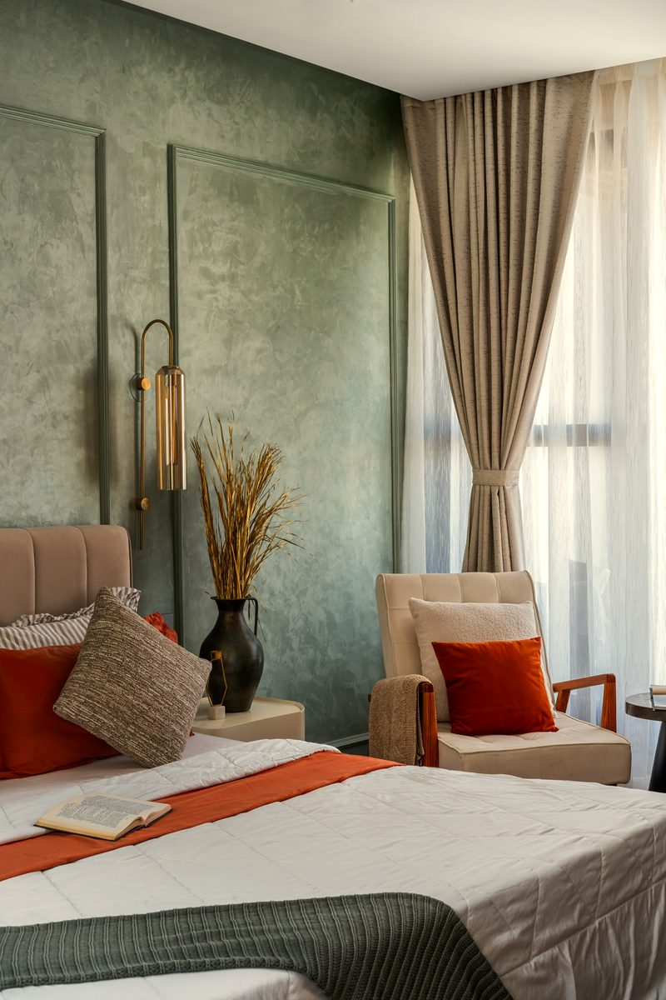

The best styling on our Cedar Strings shoot wasn't on the shot list. Cedar Strings is a Bengaluru home designed by Inspacio Design Studio, and most of the day went the way interior photography in Bengaluru usually goes for us: agree the frames, style each room, wait for the light, shoot. Then the family's golden retriever walked into the bedroom, sat down on the rug and looked straight at the camera. We kept shooting.
The room we had set up
The bedroom was ready. Sage plaster walls with moulded panels, a vintage wooden bureau with red flowers and a small bust on top, rust cushions and a rust runner across a white bed, slim brass wall lamps on either side. Bed made, flowers placed, lamps balanced. It's the kind of room a designer wants photographed cleanly, with nothing in the way of the materials and the colour.

That frame is in the set, and it should be. It shows exactly what Inspacio Design Studio built. The details carry it too: the grain on the bureau, the texture in the plaster, the way the brass lamp picks up the green of the wall.

Why we didn't clear the frame
The usual instinct on an interior shoot is to clear anything that wasn't planned and reshoot. A dog on the rug isn't part of the design brief. But when he sat down in front of the bed, the room changed. It stopped being a set and became somebody's bedroom.
That frame is now one of my favourites from the project, because it shows what the design is for. Someone lives here. Someone comes home to this. Empty rooms show the design. A lived-in moment shows why it matters.
He showed up again later in the lounge, settling on the shaped rug in front of the textured wall with its row of warm lights, a football abandoned beside him. Same idea: the space is beautiful on its own, and it reads as a home the moment someone is in it.

Clean frames and lived-in frames: what designers should ask for
This isn't an argument against empty rooms. For residential interior photography, the clean frames are the backbone of a designer's portfolio and what magazines usually ask for. We always deliver them first.
But a portfolio made only of empty rooms can start to feel like a catalogue. A few lived-in frames, with a pet, a book left open or someone reading by the window, give a prospective client something to picture themselves in. They also tend to be the images people stop on when they're scrolling.
If you're an interior designer briefing a shoot, a few things help:
- Tell us early if the family has pets or would be happy to appear in a frame or two.
- Agree the clean shot list first, so the portfolio frames are never at risk.
- Leave a little room in the day for the moments nobody planned.
Light matters as much as styling here. We've written about why natural light changes everything in interior photography, and it was the soft daylight in these rooms that let a candid moment sit naturally beside the styled frames.

Frequently asked questions
Do you photograph homes for interior designers in Bengaluru?
Yes. We're based in Bengaluru and photograph homes for interior designers and architects here and across India.
Will we still get clean, empty-room photos for our portfolio?
Yes. Lived-in frames are an addition, not a replacement. Every shoot still delivers the clean frames a designer needs for their portfolio and for publication.
How soon do we get the photos?
Edited photographs are typically delivered within 72 hours of the shoot.
See the full set from this shoot on the Cedar Strings project page, browse more interior and architecture photography, or get in touch to plan your next project's shoot.
Follow our latest work on Instagram (@soulandfuel_media) and watch our films on YouTube.